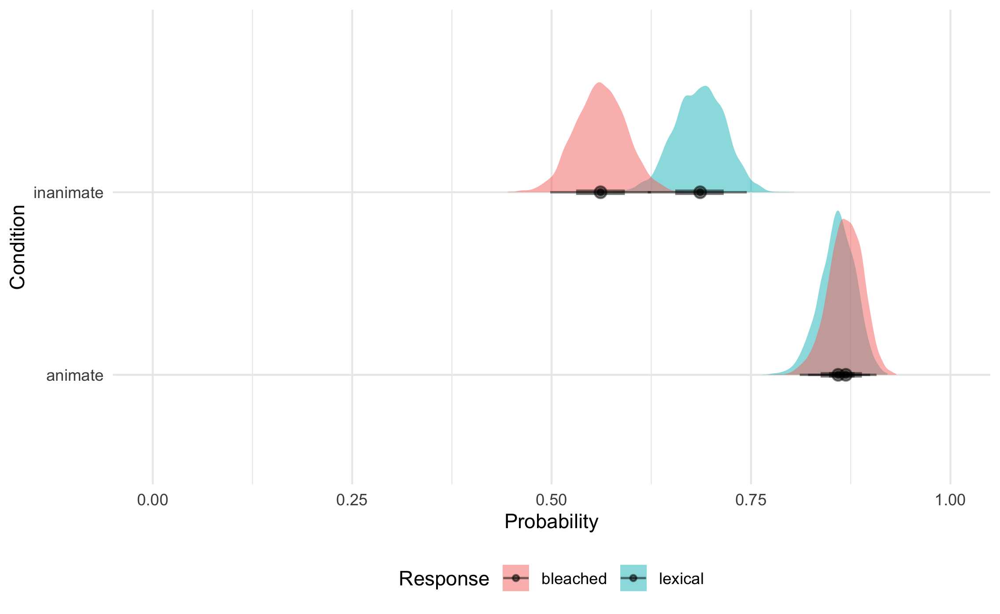
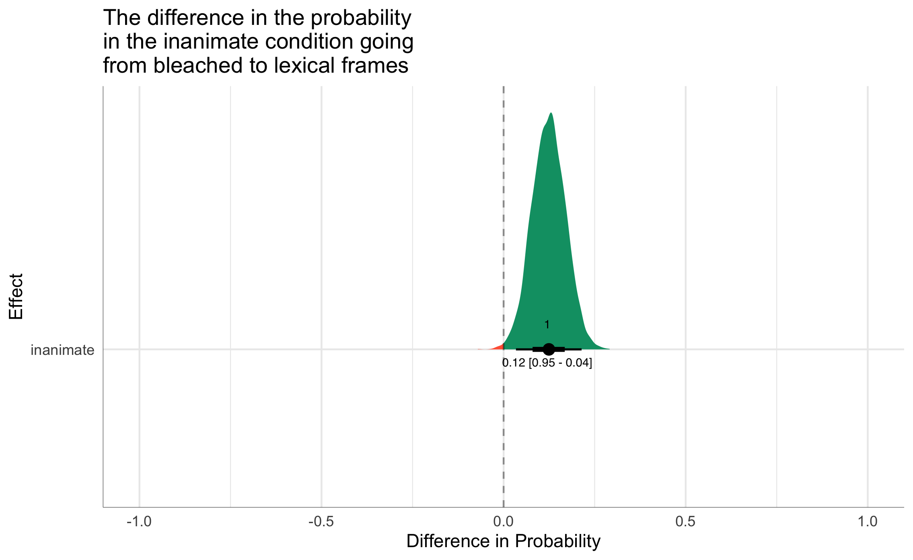

| Parameter | Median | HDI | % in ROPE | MPE | Rhat | ESS |
|---|---|---|---|---|---|---|
| Intercept | 1.71 | [1.34, 2.11] | 0.00 | 1.00 | 1.00 | 1741 |
| animate | -1.70 | [-2.19, -1.24] | 0.00 | 1.00 | 1.00 | 1613 |
| lexical | -0.08 | [-0.61, 0.49] | 0.48 | 0.61 | 1.00 | 1510 |
| animate:lexical | 0.66 | [-0.04, 1.35] | 0.06 | 0.97 | 1.00 | 1477 |
Experiment 2: Word Learning - Single target frame
Overview
Word Learning - Single target frame in a trial task preview
Task: Participants were presented with a set of videos with a dialogue between two speakers featuring a novel word. At the end of each trial, they were asked to provide their guess about the novel word’s meaning, and indicate their confidence level (scale: 1-4). The difference between this experiment and (1) is that in each target adjective trial, participants heard the adjective in predicative version and then only in ONE single other frame.
Statistical Analysis
First, in order to determine the probability of guessing an emotion adjective, a Bayesian logistic regression was run. In the model, the fixed effect predictors were animacy condition (2 levels: animate, inanimate) and frame condition (2 levels: bleached, lexical) and their interaction. Second, in order to analyze confidence ratings, an Bayesian ordinal regression was run. The outcome of this model was the probability of a confidence rating as a function of the same fixed effect predictors from the logistic model: animacy condition (2 levels: animate, inanimate) and frame condition (2 levels: bleached, lexical) and their interaction. All model priors were the default in brms, a student’s T distribution with 3 degree of freedom. All models were fit with 4000 iterations (1000 warm-up). Hamiltonian Monte-Carlo sampling was carried out with 6 chains distributed between 6 processing cores.
Results
Overall, the majority of guesses were classified as adjectives (93%). Of those, 75% were coded as emotion adjectives. The logistic model is summarized in Table 1 (this can be included in the body of a paper or the appendix). The specific interpretation of the model output is discussed in the subsequent sections in more detail. I opted for short prose instead of style, for the sake of both clarity and brevity.
Did animacy matter?
Yes: emotion adjective guesses were highly probable in the animate (condition 0.84 HDI [0.79 -0.89]). Guesses for inanimate adjectives were less likely to be emotion adjectives 0.57 HDI [0.44 -0.7].
Did frame matter?
Overall, the was less of a difference in frame (before we consider the interaction). That is, “overall” refers to the pooled estimates of a given frame of both animate and inanimate subjects. The probability of an emotion adjective in the lexical frame was 0.74 HDI [0.57 -0.77]. The probability of an emotion adjective in the bleached frame was 0.67 HDI [0.42 -0.78].
What did the interaction of animacy and frame look like?
We do see clear differences in the interaction of animacy and frame. Specifically: The probability of an emotion adjective in the lexical frame with an inanimate subject was 0.64 HDI [0.58 -0.71]. The probability of an emotion adjective in the bleached frame with an inanimate subject was 0.5 HDI [0.43 -0.57]. The probability of an emotion adjective in the lexical frame with an animate subject was 0.84 HDI [0.78 -0.88]. Finally, the probability of an emotion adjective in the bleached frame with an animate subject was 0.85 HDI [0.8 -0.9].
We have a few options for plots here. Both plots below show the same information (the posterior distribution of the probability of guessing an emotion adjective), but present with a different fixed effect on the y-axis. In Figure 1, animacy is on the y-axis. In this plot we can see that the probability of guessing an emotion adjective is very similar in the bleached and lexical frames when the subject is animate. On the other hand, lexical frame does make a difference when the subject is inanimate.

Figure 2 has the frame condition on the y-axis. This shows us that words with animate subjects are more likely to be guessed as emotion adjectives than ones with animate subjects in both lexical and bleached frames. These two plots are derived from the same model, but provide different insights.

Effect Sizes
Just as for some previous work, I included an two example effect size plots that plot the difference between the posterior distributions in Figure 1. Figure 3 shows all plausible differences in the effect of frame (going from bleached to lexical) in the inanimate condition. The number inside to distribution is the probability of the effect being positive (a 1 indicates that we are 100% sure the effect is positive based on our data). The numbers below the data points are the mean of the the distribution (or the most probable effect size), and the upper and lower bounds of the 95% Highest Density interval (HDI). Figure 4 shows the same information in the animate condition. In this case, we see that the probability of positive effect is .39, suggesting that we are unsure of the direction of the effect. In other words, we can’t conclude that frame made a difference when the subject was animate. On the other hand, we do see compelling evidence that frame is important when the subject is inanimate.

Ratings
Overall, subjects were not highly confident in their guesses. Figure 5 shows that 2 was chosen most often overall, where 4 was scarcely chosen at all. The ordinal model is summarized in Table 2, and the converted to probability and visualized in Figure 6
The ratings data show us that in three of the four possible cases, 2 was the most probable confidence rating. In the inanimate-bleached condition, 1 was the most probable confidence rating. Additionally, 4 was the least probable rating in all 4 conditions. However, in the animate-lexical condition, 3 was the second most probable rating, unlike the other three conditions, where 3 was the second-least probable rating. As a result, it is plausible that the participants were most confident in their ratings in the animate-lexical condition.
| Parameter | Median | HDI | % in ROPE | MPE | Rhat | ESS |
|---|---|---|---|---|---|---|
| Intercept[1] | -0.83 | [-1.13, -0.54] | 0.00 | 1.00 | 1.00 | 2910 |
| Intercept[2] | 1.22 | [0.91, 1.54] | 0.00 | 1.00 | 1.00 | 3888 |
| Intercept[3] | 3.44 | [2.91, 4.04] | 0.00 | 1.00 | 1.00 | 4088 |
| animate | -1.28 | [-1.76, -0.78] | 0.00 | 1.00 | 1.00 | 2850 |
| lexical | 0.61 | [0.18, 1.00] | 0.00 | 1.00 | 1.00 | 3068 |
| animate:lexical | 0.27 | [-0.39, 0.93] | 0.32 | 0.79 | 1.00 | 2684 |